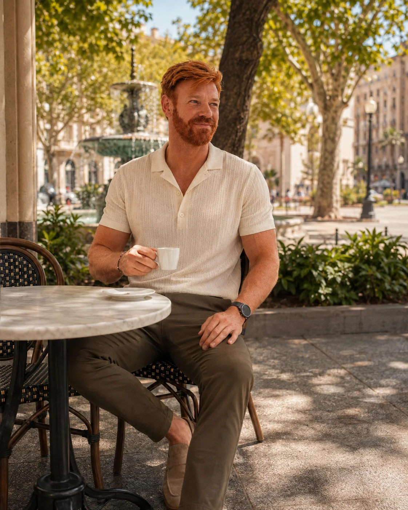
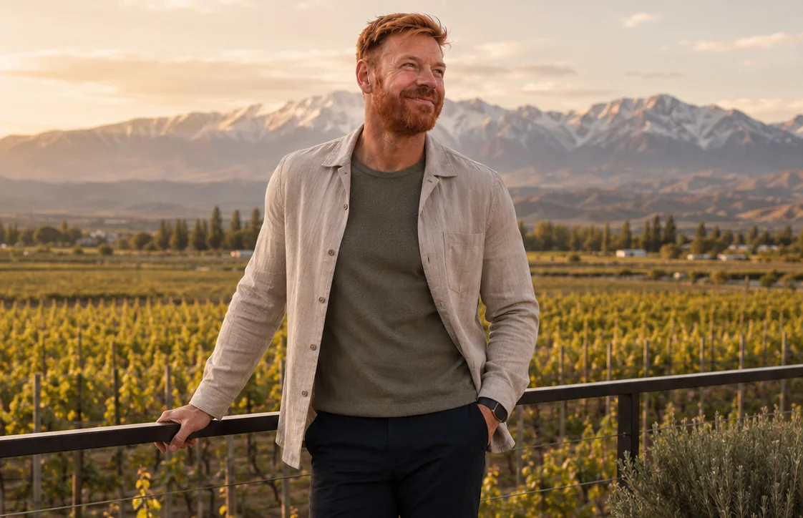
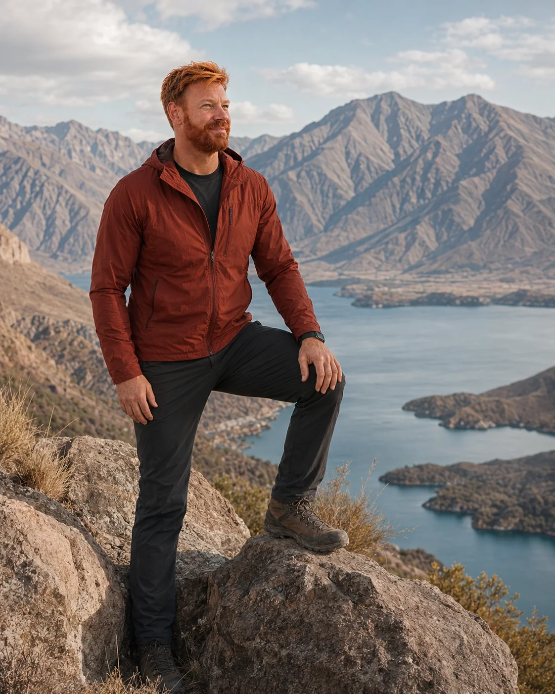

Pausa urbana
Antes ou depois das vinícolas, Mendoza também pede tempo na cidade: cafés, sombra e um ritmo que funciona melhor sem pressa.
Mendoza não é só enoturismo. A graça está em como a cidade e os vales vinícolas colocam a Cordilheira em escala humana e desaceleram o roteiro. É um destino excelente para quem quer paisagem, boa mesa e uma leitura mais ampla da Argentina.

A região entrega uma Argentina de horizontes largos: vinhedos, montanhas, estradas bonitas e hotéis que convidam a ficar. Quando Mendoza entra no roteiro do jeito certo, ela muda o compasso da viagem e abre espaço para experiências mais sensoriais.
Mendoza se entende por duas escalas complementares: a tranquilidade dos vinhedos e a presença monumental da Cordilheira.

Antes ou depois das vinícolas, Mendoza também pede tempo na cidade: cafés, sombra e um ritmo que funciona melhor sem pressa.

Quando a montanha entra no quadro, a viagem ganha outra dimensão.
Mendoza costuma render mais quando você define o papel da região no roteiro antes de sair reservando tudo.
Luján de Cuyo, Maipú e Valle de Uco entregam atmosferas diferentes. O ideal é decidir se você quer praticidade, vinícolas clássicas ou uma experiência mais isolada.
Mendoza não combina com agenda apertada. Deixe espaço para almoço, degustação e deslocamentos sem pressa.
Mesmo quando o foco é uma bodega, a montanha muda a leitura do destino. Vale escolher ao menos um momento em que a paisagem seja protagonista.
Mendoza pode ser respiro entre cidades maiores ou ponto central de uma etapa mais sofisticada da Argentina.
Quatro decisões já resolvem a maior parte da parte prática.
Duas noites atendem ao essencial. Três ou quatro noites permitem viver vinícolas, hotel e paisagem com calma.
Quem quer praticidade costuma ficar mais perto da cidade. Quem quer experiência pode apostar em hotéis-bodega ou no Valle de Uco.
Se o plano inclui vinícolas, vale organizar motorista, transfers ou visitas estruturadas para evitar improviso.
Primavera e outono costumam ser épocas muito agradáveis. A vindima cria um clima especial, mas também aumenta o movimento.
Sim. A região também funciona pela paisagem, hotéis, gastronomia e pela sensação de abertura do território.
Depende do estilo da viagem. Cidade facilita a logística; hotéis em vinícolas elevam a experiência.
Muito bem. Mendoza cria um contraste elegante com o ritmo urbano da capital.
Bastante. Mas funciona igualmente bem para viagens solo, amigos ou casais que gostam de boa mesa e paisagem.